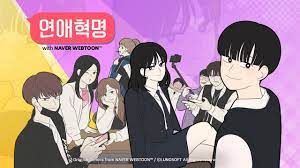

1부의 스토리 구성은 두 번씩이나 현재 시점으로 연재되다가 2년 전 시점의 주연인 왕자림, 이경우의 에피소드로 연재[2]되고, 다시 현재 시점으로 돌아오는 식이다. 2부에서는 현재 시점으로 연재되다가 한 조연의 유치원 때부터 중 3 때까지의 전반의 에피소드[3]가 전개된 뒤, 현재 시점으로 돌아온 뒤 또 다시 2~3년 전 시점의 한 악역의 에피소드로 연재되는 특징을 갖고 있다.[4] 그 뒤로의 대부분 스토리는 현재 시점에서 진행되다가 한 주연의 연대기 에피소드[5]로 전개되고 있다. 이후 수학여행을 이후로 또다른 이경우 에피소드가 진행되고 이경우의 갈등을 끝으로 2부가 막을 내린다. 3부에서는 다소 어두운 분위기가 연출된다.
